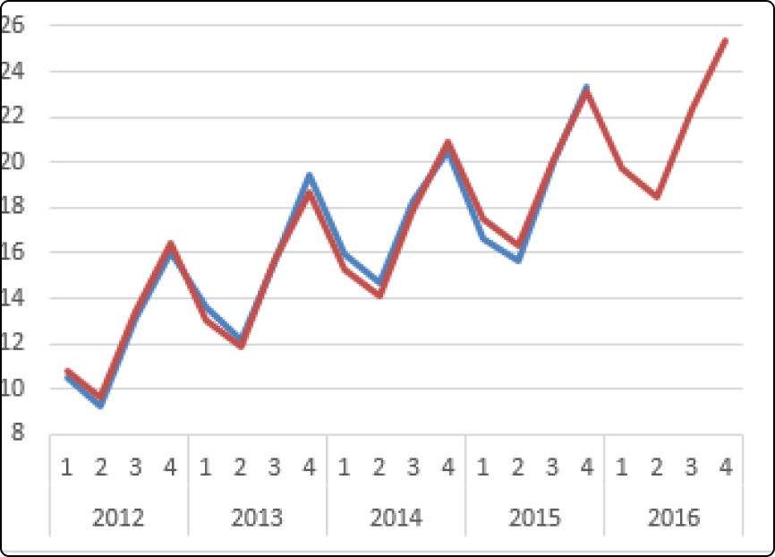

Masaganang Agricultura
Maunlad na Ekonomiya
AgroConnect Cabuyao is an agriculture information system designed to assist the City Agriculture Office in making informed decisions regarding crop selection planting.
It serves as a comprehensive tool enabling the storage, analysis, and generation of data to identify trends and optimal crops for each season. By leveraging data-driven insights, it empowers officials to conduct in-depth analysis considering various factors.
Additionally, the system incorporates features like soil health monitoring and weather forecasting to enhance crop management practices. Furthermore, it provides a feedback mechanism allowing agriculturists and other stakeholders to share suggestions and concerns.

The Cabuyao Agriculture Office, located at the 3rd Floor Cabuyao Retail Plaza in Brgy. Dos, Cabuyao, Philippines, is a local government center providing agricultural assistance to farmers, fisherfolk, cooperatives, and other relative groups. Their goal is to enhance the livelihoods of those involved in agriculture. They offer trends, and environmental conditions.
This guidance is particularly helpful during the planning phase, allowing for the monitoring of planting cycles and progress tracking. Every month, the Cabuyao Agriculture office requires detailed reports from its agriculturist technicians, who specialized in specific crops like rice, vegetables, and fruits.
These reports are crucial for tracking progress and making informed recommendations to farmers. By analyzing past production data, these technicians can provide valuable insights to help farmers make the best decisions for their crops. This ensures that farmers receive tailored advice that is grounded in real-world experience, ultimately contributing to the success and sustainability of agriculture practices in Cabuyao.
Key Features:
- Seasonal Trends
- Seasonal Top Crops
- Soil Health Monitoring
- Weather Forecast
- Geospatial Map Trends
- Feedback
Seasonal Trends
This feature is capable of analyzing trends like crop yield performance, pest and disease occurrence, crop prices, production volume, cost volume, sales volume, and income from prices.
Seasonal Top Crops
This feature is capable of identifying appropriate crops with favorable value by analyzing data from past seasons.
Soil Health Monitoring
This feature is empower agriculturalists to oversee soil nutrient levels and pH for farmers, allowing them to provide feedback and suggestions for ongoing soil health monitoring.
Summary of Soil Health in Cabuyao, Laguna:
- pH Level: Measures the acidity or alkalinity of the soil.
- Nitrogen Content: Amount of nitrogen present in the soil, crucial for plant growth.
- Phosphorus Content: Quantity of phosphorus in the soil, essential for root development and flowering.
- Potassium Content: Level of potassium in the soil, important for overall plant health and disease resistance.
- General Rating: Overall assessment or grade of the soil's fertility and suitability for crops.
View More
Weather Forecast
A five-day weather forecast that includes temperature, humidity, precipitation, wind speed, and rainfall probability, providing valuable assistance for daily operations by monitoring weather conditions.
View More
Geospatial Map Trends
Facilitating the submission of feedback for addressing concerns and providing suggestions for system enhancement.
View More
Feedback
This feature is capable of identifying appropriate crops with favorable value by analyzing data from past seasons.
View More